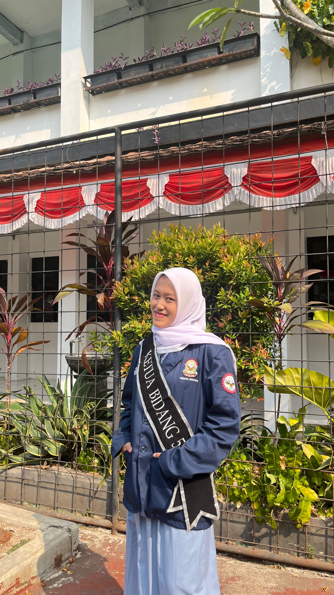

come get to know me better!

Halo! Nama saya Prita Manohara. Saya seorang siswi SMA yang ceria, penuh semangat, dan aktif di organisasi.
Saat ini saya menempuh pendidikan di SMA Negeri 10 Depok. Sekolah yang seru dan mendukung saya untuk berkembang.
XII.2 asik banget! Seru, ramah, perhatian, dan temen-temennya pinter plus cerdas.
Hobi aku menulis, public speaking, dan berorganisasi. Kesibukan sekarang fokus studi tingkat akhir dan aktif kegiatan sosial.
Aktif dalam menyusun dan mengeksekusi program kerja sekolah.
Wadah kolaborasi pengurus organisasi pelajar se-Kota Depok.
Yuk, kunjungi Instagram aku!
@pritamanohara